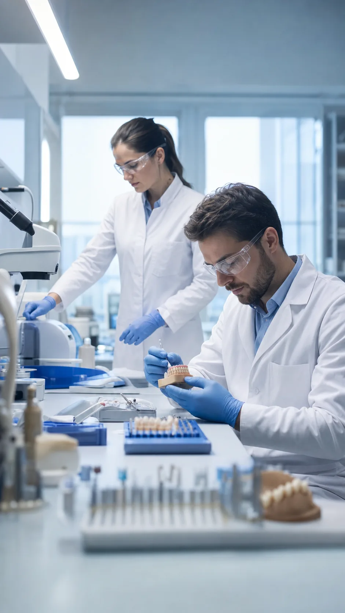

Перечень уточняется.

Вид работы 04 · предварительно
Комплексные случаи
Клинико-лабораторное сопровождение многоэтапной задачи. Реальный объём участия dpb необходимо подтвердить.
Обсудить случайРезультат услуги
Единый план взаимодействия врача и техника
Здесь будут границы проекта, роли участников, контрольные точки и формат передачи результата.
ФорматПроектное сопровождениеСрокИндивидуальноКоммуникацияПо контрольным точкамСтоимостьПосле оценки объёма
Что предоставить
Полная картина задачи
Сканы, модели и фотографии.
Этапы, сроки и ответственные.
Функциональные и эстетические критерии.
Процесс
Проект с понятными контрольными точками
- 01Совместный разбор
- 02План проекта
- 03Диагностический этап
- 04Промежуточные работы
- 05Контроль и корректировки
- 06Финальный результат

Пример работы
Комплексный кейс по этапам
Вводные, роли участников, контрольные точки, ошибки и финальный результат.
Другие лабораторные кейсы →Новый проект